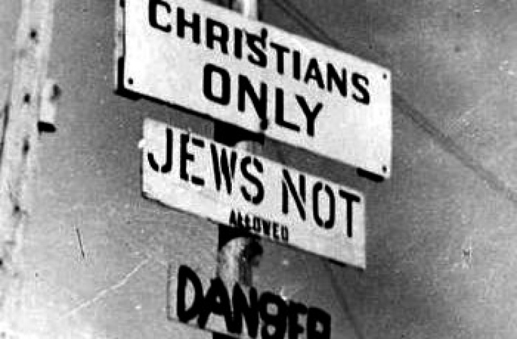

Glossary
This is a glossary of words related to the Second World War that you may not know.
Alliance
- In the context of WWII, an alliance is a formal treaty between two nations to cooperate. For example, the Allied alliance cooperated when fighting the Axis alliance during WWII.
Anti-semitism
- The discrimination against Jews. Anti-semitism is a form of racism.
An example of anti-semitism is shown in the image below.

Blitzkrieg
- The German term for “lightning war,” where fast and mobile forces (like armoured cars) were used to create disorganization among enemy forces. This military tactic was used by the Germans in WWII to quickly invade and defeat nations like Poland and France (History.com Staff, 2009).
Co-belligerents
- Countries fighting with each other against a common enemy during a war, without a formal military alliance treaty.
Military tactic
- A military tactic is the science and art of organizing a military force. Tactics are the strategies used by the military force to defeat an enemy force in battle (Military tactics, 2018).
Neutral
- A country that does not fight or form alliances in a war or conflict.